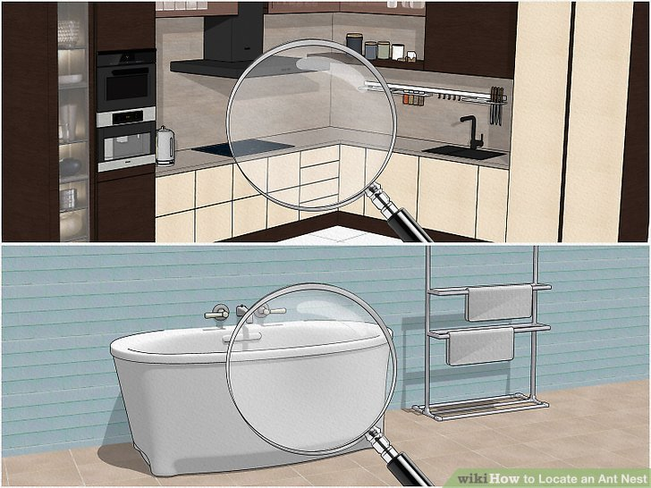
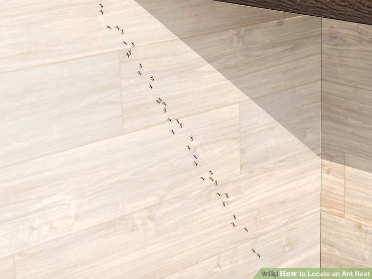
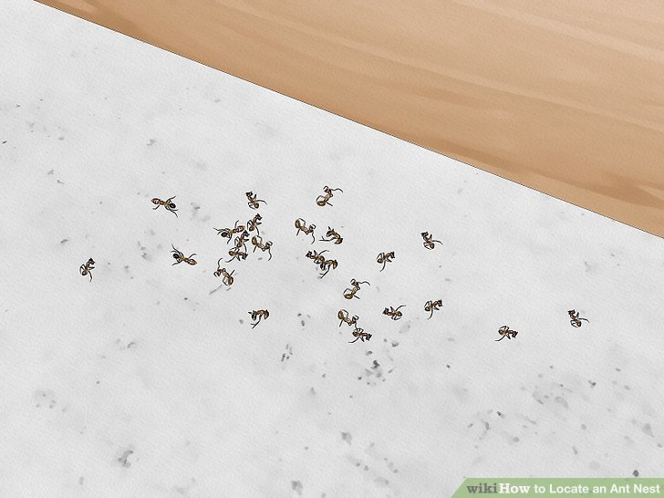
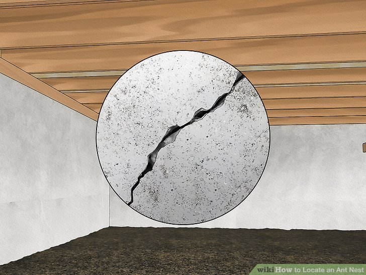
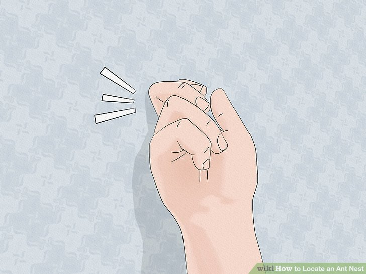
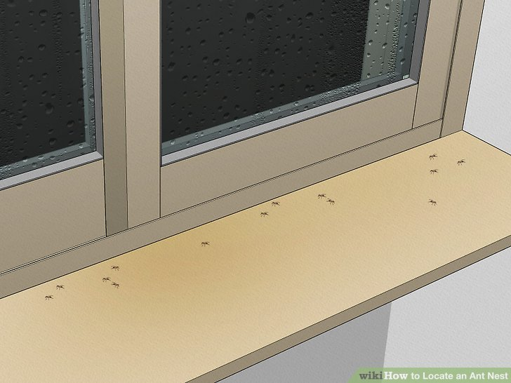

Method One: Indoors
-

Search the kitchen and bathroom first. These are the areas where ants are most likely to nest, along with inside your walls. Ants need access to food and water, so check around any dripping faucets and inside your kitchen cabinets, too.
Ants may also hide in your bedroom, your basement, or inside of your air conditioning unit.
-

Look for multiple ants to see which direction they’re going. Following one ant all the way back to its nest can be tedious, and it’s hard to track one ant at a time. Widen your view until you can see multiple ants, then try to follow them back to where they’re going.
If you have a lot of ants in your home, you may see a distinct line of them heading to or from the nest.
-

Set out food to bait the ants if you can’t find their nest. Ants are much easier to see when they’re holding large pieces of food. Set out some peanut butter, jelly, or bacon grease to attract worker ants and get them to carry the food back. Then, you can follow them as they head to and from the food source back to their nest.
This may take a bit of effort, but if you have a lot of ants, they should locate the food pretty quickly.
-

Spot a nest near piles of dead ants. If you see a small pile of ants that are no longer with us, there’s probably a nest nearby. Look around the area to see if you can spot any slits or holes in the wall where the ants might be coming from.
You might also see little pieces of other dead insects that the ants have eaten.
Locate ants near wood shavings in your cellar or attic. If you spot any wood shavings or chewed wood, it’s a good sign you might have carpenter ants. The wood shavings are probably near their nest, so search that area to find a small hole or live ants.
Carpenter ants are usually all black or red and black. They eat other insects, meat, and sweet things, so they may also congregate in your kitchen.
-

Check your crawlspace for cracks in the concrete. Some species of small ants like to congregate in the warm cracks of your foundation or crawlspace. If you’re at a loss as to where the ants are living, try checking down underneath your home to see if they’re making a nest there. If you see a lot of ants crawling on or around the concrete, chances are, they’re living inside of it.
-

Tap on wood and listen for a hollow sound to find nests inside your walls. When ants move into the wood in your home, they’ll usually eat the center of posts and beams, leaving the inside hollow. If you think there’s a nest behind your walls, tap on the wood with your knuckles and listen for a hollow sound. If it sounds hollow, there may be an ant’s nest back there.
Sometimes, the knocking will frighten worker ants and scare them out of the nest. If that happens, you can see where they’re coming from and find out how they’re getting into their nest.
If there are ants in your walls, they’re most likely carpenter ants.
-

Check your window sills and doorways after a heavy rainfall. Some ant species that normally live outdoors will move inside once the rain hits. If you notice a lot of ants in your home after wet weather, take a look at the cracks in your windowsill, doorway, or walls. Chances are, the ants are still moving in, so you may be able to manage them before they make a nest inside.
This usually happens during early to mid fall when the rain first starts. This can vary depending on what region you live in, though.